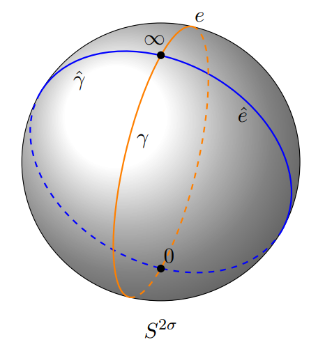
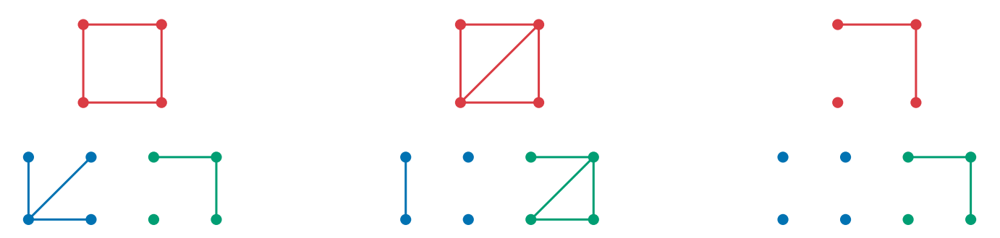

My research focuses on algebraic topology, with emphasis on two areas: equivariant topological invariants and transfer systems.

The equivariant topological invariant I study is Bredon homology, which is an extension of classical homology to spaces with group actions.
With regards to transfer systems, I am investigating model category structures on finite posets, whose structure is partly formed by transfer systems. Here we see three example of model structures on the smallest square lattice, where the red line segments represent weak equivalences, the blue represents acyclic fibrations, and the green acyclic cofibrations.
